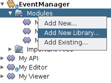

Apache NetBeans
Apache NetBeansLatest release
NetBeans Property Editor Tutorial
| This tutorial needs a review. You can edit it in GitHub following these contribution guidelines. |
This tutorial shows techniques for using property editors in NetBeans, including providing custom editors and custom inplace editors. Specifically, the following will be covered:
-
Providing your own property editor for an individual Node
-
Creating a custom editor
-
Creating a custom inplace editor
-
Registering a custom property editor globally
| This document uses NetBeans Platform 7.1 and NetBeans IDE 7.1. If you are using an earlier version, see the previous version of this document. |
Related community tutorials:
Introduction to Custom Property Editors
Often you may have a property for which either the standard property editor is not sufficient, or the property type is a class for which there is no standard property editor. NetBeans IDE contains classes for many common Java types, but every possible need cannot be covered by a set of generic property editors.
This tutorial is intended as a follow-on to these preceding tutorials, and its code is based on the code from them:
You’ll pick up where you left off in the previous tutorial, with the class EventNode, which wraps an Event object, and offers a read-only property for its index property and a read/write one for its date property.
Creating a Property Editor
The basics of creating a property editor are pretty simple. The JavaBeans API offers a base class, PropertyEditorSupport, which covers most of the basics, and can be used to create a simple property editor with little work.
Property editors serve two purposes—converting values to and from strings for display in the property sheet, and validating new values when they are set. To start out, you will create a property editor which simply provides and accepts a differently formatted date.
-
Right click the
org.myorg.myeditorpackage, and choose New > Java Class. In the wizard, name the classDatePropertyEditor.
-
In the code editor, change the class signature to extend
PropertyEditorSupport:
public class DatePropertyEditor extends PropertyEditorSupport {-
Implement
setAsText()andgetAsText()as follows:
@Override
public String getAsText() {
Date d = (Date) getValue();
if (d == null) {
return "No Date Set";
}
return new SimpleDateFormat("MM/dd/yy HH:mm:ss").format(d);
}
@Override
public void setAsText(String s) {
try {
setValue (new SimpleDateFormat("MM/dd/yy HH:mm:ss").parse(s));
} catch (ParseException pe) {
IllegalArgumentException iae = new IllegalArgumentException ("Could not parse date");
throw iae;
}
}-
Open
EventNodein the code editor. Change the line that declaresdatePropertyso that the variable is declared asPropertySupport.Reflectionrather thanProperty. You will be calling a method specific toPropertySupport.Reflection:
PropertySupport.Reflection dateProp = new PropertySupport.Reflection(obj, Date.class, "date");-
Insert a new line after that line:
dateProp.setPropertyEditorClass(DatePropertyEditor.class);-
Run the Event Manager, use Window > Open Editor to open your editor component, and note the new format of the Date property, as shown here:

Creating a Custom Editor
Another basic feature of standard `java.beans.PropertyEditor`s is the ability to have a "custom editor", which usually appears in a dialog when you click a "…" button beside the property in the property sheet.
Going into the details of implementing such an editor is out of scope for this tutorial, but here are the basics:
-
Implement the following two methods on
DatePropertyEditor:
@Override
public Component getCustomEditor() {
return new JLabel ("I want to be a custom editor");
}
@Override
public boolean supportsCustomEditor() {
return true;
}-
Run the Event Manager, and now you have a "…" button beside the property in the property sheet, as shown below:

Click it, and your JLabel appears:

If you were doing this for real, you would create a JPanel, and embed some sort of calendar and/or clock component to make it easy to set the properties; the code necessary to do it right would be a distraction here.
-
Remove the above two methods before continuing.
Creating a Custom Inplace Editor
What would be really useful is to have a better date editor embedded in the property sheet itself. NetBeans has an API that makes this possible. It involves a bit of code, but the result is worth it.
Since the SwingX project includes a nice date picker component, you will simply reuse that. So the first thing you need to do is to get SwingX into the Event Manager. Since NetBeans IDE bundles SwingX, we will get the swingx.jar by browsing into the NetBeans IDE installation directory and creating a new module from the swingx.jar that we will find there.
-
Expand the Event Manager, right-click the Modules node, and choose Add New Library, as shown here:

-
Browse for
swingx-0.9.5.jar(or whatever version of the JAR is available) in "ide/modules/ext" in the NetBeans IDE installation directory. Click Next.
-
Click Next again, set the code name base to
org.jdesktop.swingx, and then click Finish.
-
Right click the My Editor project node in the Projects tab in the main window, and choose Properties.
-
In the Libraries page, click the Add Dependency button, and add a dependency on your new "swingx" module.
Now you are ready to make use of the date picker. This will involve implementing a couple of NetBeans-specific interfaces:
-
ExPropertyEditor—a property editor interface through which the property sheet can pass an "environment" (
PropertyEnv) object that gives the editor access to thePropertyobject it is editing and more. -
InplaceEditor.Factory—an interface for objects that own an
InplaceEditor -
InplaceEditor—an interface that allows a custom component to be provided for display in the property sheet.
You will implement InplaceEditor.Factory and ExPropertyEditor directly on DatePropertyEditor, and then create an InplaceEditor nested class:
-
Change the signature of
DatePropertyEditoras follows:
public class DatePropertyEditor extends PropertyEditorSupport implements ExPropertyEditor, InplaceEditor.Factory {-
As in earlier examples, press Ctrl-Shift-I to Fix Imports and then use the "Implement All Abstract Methods" to cause the missing methods to be added.
-
Add the following methods to
DatePropertyEditor:
@Override
public void attachEnv(PropertyEnv env) {
env.registerInplaceEditorFactory(this);
}
private InplaceEditor ed = null;
@Override
public InplaceEditor getInplaceEditor() {
if (ed == null) {
ed = new Inplace();
}
return ed;
}-
Now you need to implement the
InplaceEditoritself. This will be an object that owns a swingxJXDatePickercomponent, and some plumbing methods to set up its value, and dispose of resources when it is no longer in use. It requires a bit of code, but it’s all quite straightforward. Just createInplaceas a static nested class insideDatePropertyEditor:
private static class Inplace implements InplaceEditor {
private final JXDatePicker picker = new JXDatePicker();
private PropertyEditor editor = null;
@Override
public void connect(PropertyEditor propertyEditor, PropertyEnv env) {
editor = propertyEditor;
reset();
}
@Override
public JComponent getComponent() {
return picker;
}
@Override
public void clear() {
//avoid memory leaks:
editor = null;
model = null;
}
@Override
public Object getValue() {
return picker.getDate();
}
@Override
public void setValue(Object object) {
picker.setDate((Date) object);
}
@Override
public boolean supportsTextEntry() {
return true;
}
@Override
public void reset() {
Date d = (Date) editor.getValue();
if (d != null) {
picker.setDate(d);
}
}
@Override
public KeyStroke[] getKeyStrokes() {
return new KeyStroke[0];
}
@Override
public PropertyEditor getPropertyEditor() {
return editor;
}
@Override
public PropertyModel getPropertyModel() {
return model;
}
private PropertyModel model;
@Override
public void setPropertyModel(PropertyModel propertyModel) {
this.model = propertyModel;
}
@Override
public boolean isKnownComponent(Component component) {
return component == picker || picker.isAncestorOf(component);
}
@Override
public void addActionListener(ActionListener actionListener) {
//do nothing - not needed for this component
}
@Override
public void removeActionListener(ActionListener actionListener) {
//do nothing - not needed for this component
}
}-
If you haven’t already, press Ctrl-Shift-I to Fix Imports.
-
Run the Event Manager again, use Window > Open Editor to open your editor (really it’s not much of an editor anymore), select an instance of
EventNodeand click the value of the date property in the property sheet. Notice that the date picker popup appears, and behaves exactly as it should, as shown below:

Registering DatePropertyEditor Globally
Often it is useful to register a property editor to be used for all properties of a given type. Indeed, your DatePropertyEditor is generally useful for any property of the type java.util.Date. While usefulness is not the primary determinant of whether such a property editor should be registered, if your application or module will regularly deal with Date properties, it might be useful to do so.
Here is how to register DatePropertyEditor so that any property of the type java.util.Date will use DatePropertyEditor in the property sheet:
-
Right click the
org.myorg.myeditorpackage in the My Editor project and choose New > Other. Under the NetBeans Module Development category, select Module Installer. Click Finish. A subclass oforg.openide.modules.ModuleInstallwill be created for you—this class contains code that will run during startup.
-
Implement the
restored()method, which is run during startup, as follows:
public void restored() {
PropertyEditorManager.registerEditor(Date.class, DatePropertyEditor.class);
}This code will register your custom DatePropertyEditor as the default editor for all properties of the type java.util.Date throughout the system.
-
Press Ctrl-Shift-I to Fix Imports.
Remember, you should only do this if you really need to—ModuleInstall classes slow down application startup, because they mean more code has to run during startup. So where possible they should be avoided. If you do need to register a lot of property editors, though, it may make sense to aggregate them in a single module that registers them during startup.
If the type you want to provide a property editor for is in your module, it may be preferable to place the registration code in a static block that will be invoked when that class is loaded, e.g.
public class Foo {
static {
PropertyEditorManager.registerEditor(Foo.class, FooEditor.class);
}
//...|
Caveat: If you are not sure your property editor will be used during a typical session, a better technique may be to use |
Using PropertyPanel
While you won’t cover it in great detail, it is worth mentioning that the property sheet is not the only place that Node.Property objects are useful; there is also a convenient UI class in the org.openide.explorer.PropertySheet class called PropertyPanel. It’s function is to display one property, much as it is displayed in the property sheet, providing an editor field and a custom editor button, or you have called somePropertyPanel.setPreferences(PropertyPanel.PREF_CUSTOM_EDITOR), it will display the custom editor for a Property. It is useful as a convenient way to get an appropriate UI component for editing any getter/setter pair for which there is a property editor.